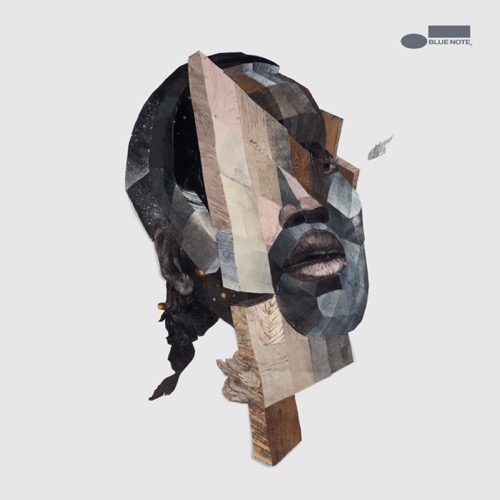
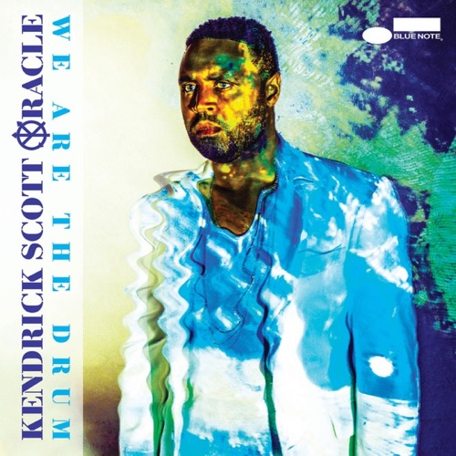
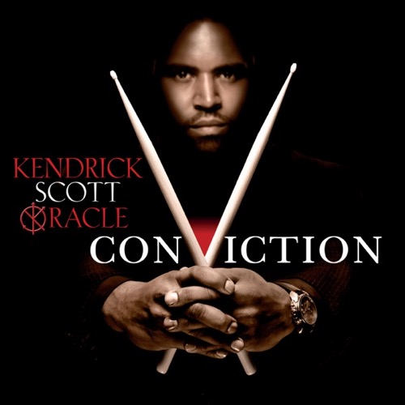
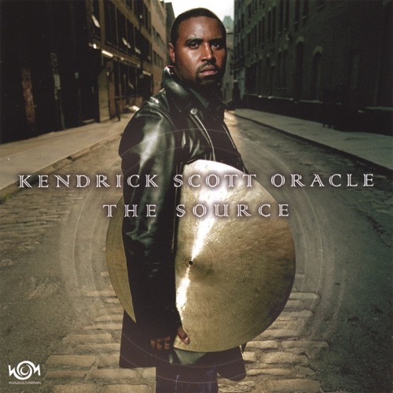

Kendrick Scott
There are drummers who keep time, and then there is Kendrick Scott, who reshapes it entirely. The Houston-born percussionist has spent the better part of two decades building a body of work that treats rhythm not as a foundation to sit beneath the music but as an expressive language unto itself: textural, dynamic, and deeply emotional.
Scott honed his craft at Berklee College of Music, where he now serves on the faculty, passing forward the same restless curiosity that defined his own development. As a sideman, his resume reads like a who's-who of modern jazz: Herbie Hancock, Charles Lloyd, Terence Blanchard, Robert Glasper, and Kurt Rosenwinkel have all relied on his singular ability to shift between thunderous power and gossamer delicacy within a single phrase.
It is as the leader of Kendrick Scott Oracle, however, that his full artistic vision comes into focus. Across albums like The Source, Conviction, We Are The Drum, and A Wall Becomes A Bridge, Scott has built a collective sound that dissolves the boundaries between acoustic jazz, electronic textures, and ambient atmospheres. The Oracle is less a band than a shared consciousness, improvisatory, cinematic, and unafraid of silence.
A Grammy Award winner whose influence extends from the bandstand to the classroom, Scott represents a generation of musicians for whom genre is irrelevant and intention is everything. His drumming does not merely accompany the music; it thinks alongside it.
Discography
Selected albums as leader

A Wall Becomes A Bridge
2019 Blue Note Records
We Are The Drum
2016 Blue Note Records
Conviction
2013 Concord Records